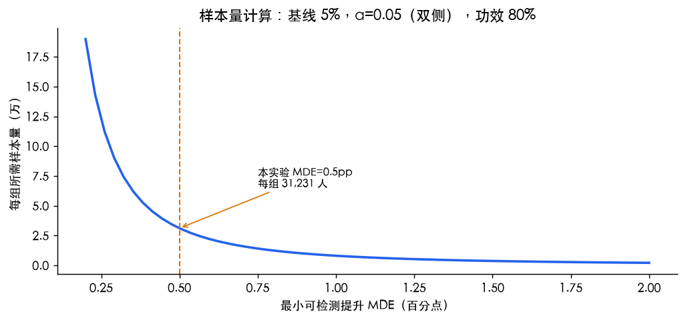
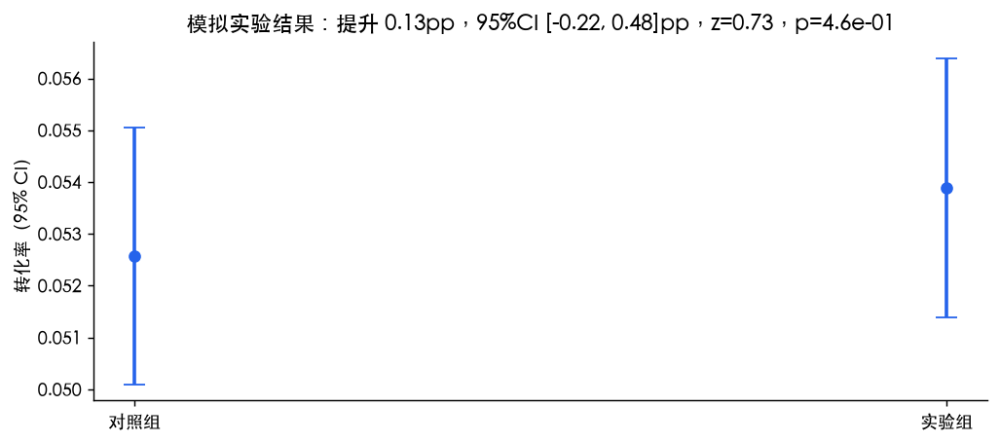
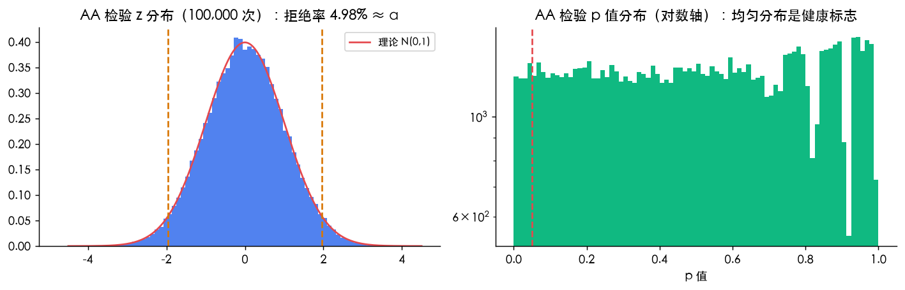
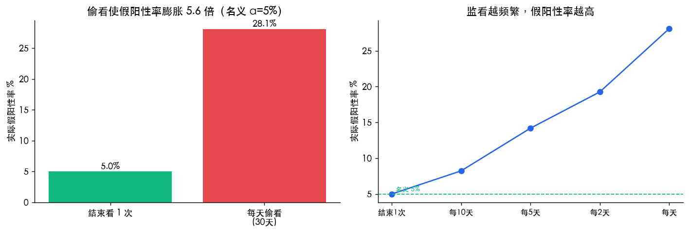
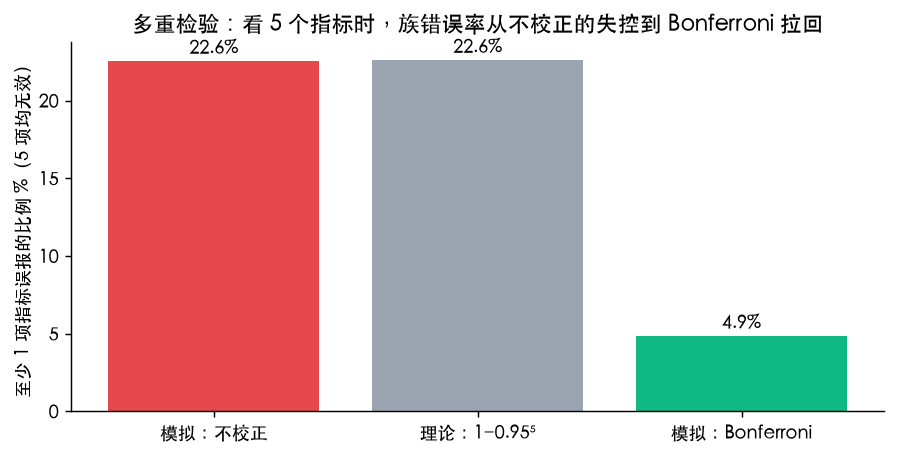
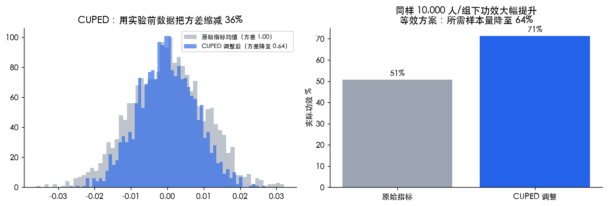
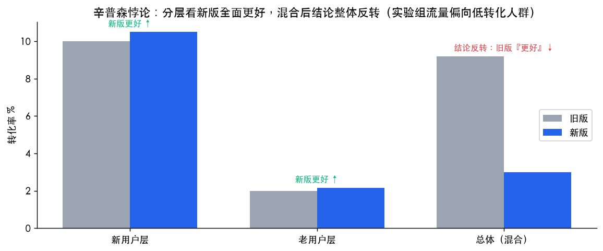
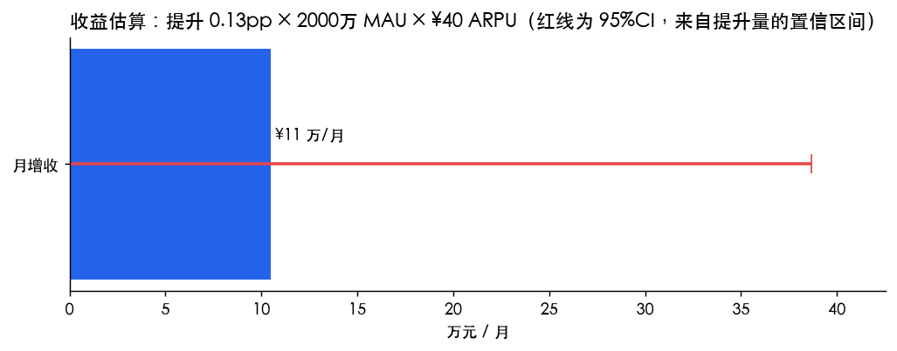

1 · 实验设计：样本量与功效
业务场景：基线转化率 5%，希望检测 10% 相对提升（MDE = 5.5% − 5% = 0.5pp），双侧 α = 0.05，目标功效 80%。

结论：每组需要 31,231 个样本（合计 62,462）。MDE 越小所需样本量呈平方级增长——把"想检测的提升"从 2pp 缩到 0.5pp，样本量不是 ×4 而是 ×16。实验设计的第一课：先算清楚你到底要检测多大的提升。
2 · 单次实验与假设检验

对照组 1,642/31,231 转化，实验组 1,683/31,231，两比例合并 z 检验：z = 0.73，提升 0.13pp，95%CI [-0.22, 0.48]pp。
3 · AA 检验：先证明你的实验平台是干净的

方法：对完全相同的两个组做 100,000 次模拟检验——AA 实验理应"不显著"。模拟结果：假阳性率 4.98%，与理论 α = 5% 吻合；p 值分布均匀。
业务含义：AA 检验是实验平台健康检查的标准动作——分流是否随机、埋点是否对齐、是否有新鲜感效应，AA 显著就说明系统有偏差，此时一切 AB 结论都不可信。
4 · 功效的模拟验证
同一场景 100,000 次模拟（真实存在 10% 提升），实际检出显著的比例 = 80.09%，与样本量公式承诺的 80% 一致。功效不是理论空谈，它是可被模拟直接验证的频率性质。
5 · 偷看（Peeking）：最常见的致命错误

方法：AA 场景（两组无差异）下模拟 30 天实验：只在结束时检验 vs 每天看一次、任一天显著就宣布。
| 监看频率 | 实际假阳性率 |
|---|---|
| 只在结束看1次 | 4.99% |
| 每2天看1次 | 8.22% |
| 每5天看1次 | 14.19% |
| 每10天看1次 | 19.27% |
| 每30天看1次 | 28.12% |
6 · 多重检验与 Bonferroni 校正

一个实验看 5 个指标（全部真实无效）：至少一项误报的概率 = 22.6%（理论 1−0.95⁵ = 22.6%）；Bonferroni 校正（α/m）后回落到 4.9%。看板上的"数字都在涨"很多时候只是多重检验的幻觉。
7 · CUPED：用实验前数据给实验"降噪"

方法：调整后的指标 Yadj = Y − θ(X − E[X])，其中 X 为实验前同用户的行为数据，θ = cov(Y,X)/var(X)。当相关系数 ρ = 0.6 时，方差缩减 36.0%（方差降至原来的 64%）。
结果：同样 10,000 人/组，功效从 51% 提升到 71%；等效方案是所需样本量降至 64%——实验周期缩短 1/3 以上，这是大厂实验平台的标准配置（Microsoft/字节/美团均在用）。
实现细节：中心化必须用已知的总体期望（或历史均值），用本次实验样本均值做中心化会吸收处理效应引入偏差；两组必须独立采样——本次开发中这两个错误都真实踩过并在代码注释中记录。
8 · 辛普森悖论：为什么必须看分层

构造场景：实验组流量意外偏向低转化人群（新用户占比 90% vs 对照组 10%）。结果：新用户层 10.0% → 10.5%（新版更好）、老用户层 2.0% → 2.17%（新版更好），但混合后 9.2% → 3.0%，结论整体反转。
业务含义：只看大盘会做出完全错误的上线路径决策；分流均衡性检查与分层分析是实验分析的必备动作。
9 · 业务收益估算

把统计结论翻译成业务语言：提升 0.13pp × 2000万 覆盖用户 × ¥40 月ARPU ≈ ¥11 万/月；其 95% 区间由提升量的置信区间直接换算（¥-18 ~ ¥39 万）。收益估算必须带区间——点估计只是故事，区间才是决策依据。
方法局限与改进方向
- 比例检验采用二项近似的解析 z 检验；真实平台常用基于 Delta method 的 t 检验处理比率指标。
- 多重检验只演示了 Bonferroni；更优选择是 Holm 逐步校正或控制 FDR（Benjamini-Hochberg）。
- 偷看问题的工业级解法是序贯检验（SPRT / mSPRT）与贝叶斯实验平台，本实验只量化了问题本身。
- CUPED 假设协变量在实验期间不受处理影响（pre-experiment data）；若用实验期协变量需谨慎（可能引入 post-treatment bias）。
- 可扩展方向：非线性收益的弹性估算、实验溢出效应（network interference）、长期效应（novelty effect）检验。